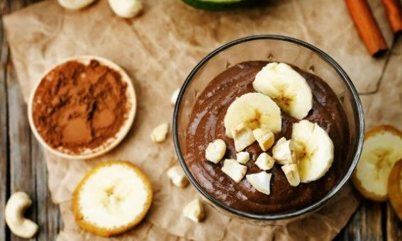

KAKAOLU YULAF PUDİNGİ

BESİN DEĞERLERİ TABLOSU
- 100 gr için belirlenen besin değerleridir.
- Enerji/kkal 116,1 kkal
- Protein 5,2 gr
- Karbonhidrat 16,7 gr
- Yağ 3,2 gr
Bu kakaolu puding tarifini uygularken kullandığınız yulaf, doyurucu ve tok tutucu özelliği
sayesinde tatlınızı sağlıklı bir ara öğüne dönüştürür.
Yulaf ezmesi kullanarak yapacağınız elmalı yulaf da yulaflı tariflerimiz arasında :)
- Malzemeler
- 3 yemek kaşığı yulaf ezmesi
- 1 su bardağı yarım yağlı süt
- 1 tatlı kaşığı bal
- 1 tatlı kaşığı kakao
- Hazırlanışı
- Bu diyet puding tarifimiz için önce sütü, yulafı ve kakaoyu karıştırıp küçük bir tencereye alın.
- Malzemeniz kıvam alana kadar sürekli karıştırarak kısık ateşte pişirin.
- Kıvam alan pudingi ocaktan alın; içerisine balı ekleyip tekrar karıştırın.
- Pudinginizi servis kaselerine paylaştırıp buzdolabında soğutun. Kakaolu yulaf pudinginiz hazır, afiyet olsun : )
Afiyet Olsun
KAYNAK